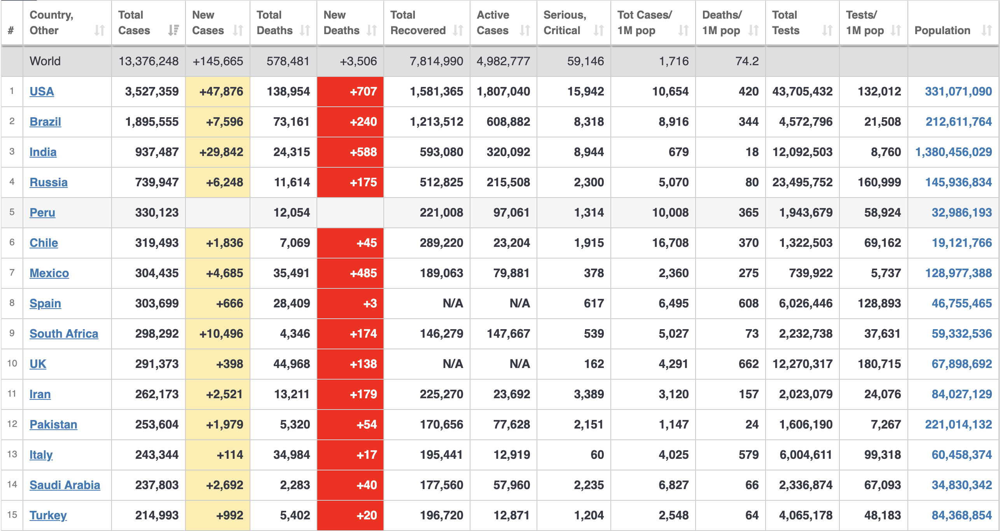

The COVID‑19 pandemic, also known as the coronavirus pandemic, is an ongoing global pandemic of coronavirus disease 2019 (COVID‑19), caused by severe acute respiratory syndrome coronavirus 2 (SARS‑CoV‑2). The outbreak was first identified in Wuhan, China, in December 2019. The World Health Organization declared the outbreak a Public Health Emergency of International Concern on 30 January 2020 and a pandemic on 11 March. As of 8 July 2020, more than 12 million cases of COVID‑19 have been reported in more than 188 countries and territories, resulting in more than 543,000 deaths; more than 6.41 million people have recovered.
The covid-19 pandemic is growing each day. Although the pandemic is afecting the whole world, there are a few zones of our planet which are more affected than others. The most affected country by this pandemic is The United States of America, right now in the USA there are more than 3 Million people infected and 138,954 have died from complications due to the coronavirus. Following the USA is Brazil as the second most affected country with almost 2 Million infected with the virus and 73,161 deaths. Followed by India with 937,487 people infected and 24,315 deaths.
In Portugal coronavirus cases have been growing at a steady pace. The peak of the desease was in the middle of April so right now the average number of new cases is 300 cases per day. Initially the focus of the desease was in the north region with a higher number of deaths. Right now the epicentre of the infection is in the Lisbon area where the total cases have surpassed the total number of cases in the north region.